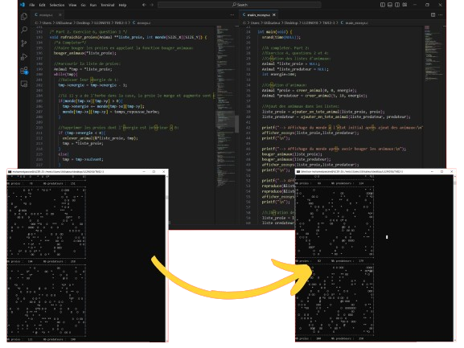
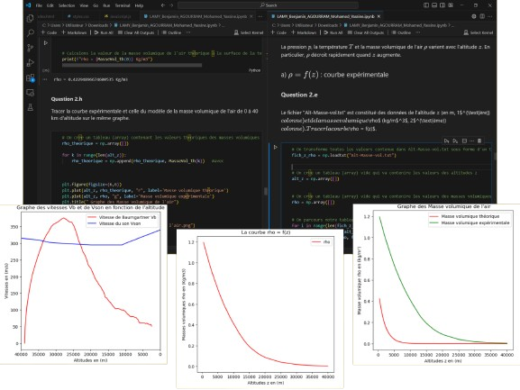
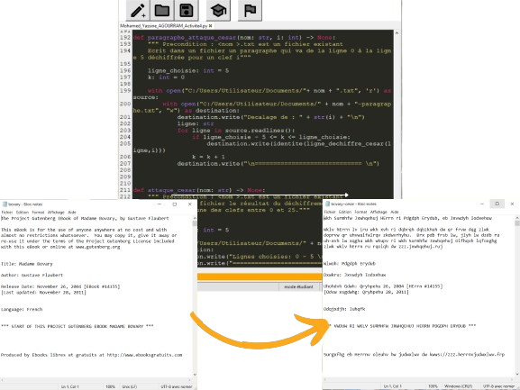
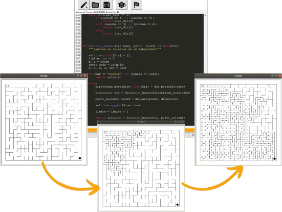
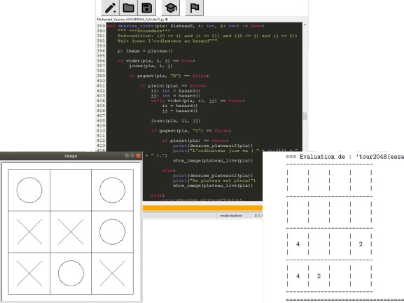
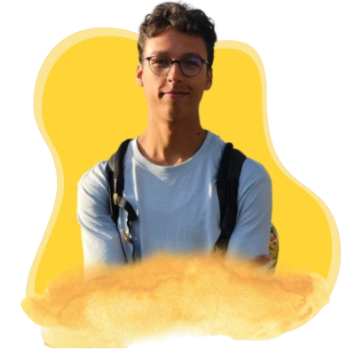

Étudiant en 2ème année Licence Informatique | Compétences en Java, C, Python, Systèmes & Shells (Bash), HTML/CSS, Bootstrap, Ocaml | À la recherche d'un stage de 3 mois dans le développement ou l'informatique système.
Dans le cadre d’un projet Python, mes amis et moi avons développé un programme simulant la congestion des voitures électriques. Ce programme explore différentes solutions à la question suivante : Comment le nombre d'infrastructures et de véhicules influence-t-il la congestion des voitures électriques ? Nous avons étudié l’impact de la congestion causée par la recharge des voitures électriques sur le temps moyen des trajets. Cela nous a permis de mieux comprendre les dynamiques collectives des véhicules électriques et leur interaction avec l'infrastructure de recharge. Grâce à ce programme, nous avons également généré plusieurs graphiques illustrant la variation du temps moyen des trajets en fonction du nombre et de la vitesse des voitures, ainsi que d’autres variables, afin de mieux visualiser et analyser le problème.

Simulation d’un écosystème
--- Click here for more info ---
Languages: C - Valgrind
×
Simulation d’un écosystème
Dans le cadre d’un projet en C, j’ai travaillé sur la programmation d’un écosystème virtuel en utilisant des listes chaînées. Dans cet écosystème, les proies et les prédateurs sont représentés par une même structure de données contenant leurs coordonnées, leur niveau d’énergie, ainsi qu’un tableau représentant leurs directions. Grâce aux différentes fonctions implémentées, nous avons simulé et visualisé les interactions entre ces entités : les déplacements, la reproduction, la prédation (les prédateurs qui mangent les proies), et la consommation de l’herbe par les proies. Toutes ces dynamiques ont été paramétrées en fonction de probabilités, permettant de créer une simulation réaliste et adaptable. Enfin, j’ai utilisé le logiciel gnuplot pour tracer des graphiques illustrant la variation du nombre d’individus (proies et prédateurs) en fonction du nombre de générations, offrant ainsi une analyse visuelle de l’évolution de l’écosystème au fil du temps.

Modélisation de la Chute Libre de Felix Baumgartner
--- Click here for more info ---
Languages: Python - Jupyter Notebook
×
Modélisation de la Chute Libre de Felix Baumgartner
Dans le cadre d'un projet numérique, mon binôme et moi-même avons travaillé sur la résolution d'un problème de mécanique et de physique, à savoir la célèbre chute libre de Félix Baumgartner. Nous avons étudié les variations des vitesses, des altitudes et des masses volumiques en fonction les unes des autres. De plus, nous avons modélisé nos résultats sous forme de graphiques descriptifs. Pour ce projet, nous avons utilisé le langage de programmation Python et l'interface Jupyter Notebook, en nous appuyant sur les bibliothèques NumPy et Matplotlib.

Chiffrement et Déchiffrement de César
--- Click here for more info ---
Languages: Python - Jupyter Notebook
×
Chiffrement et Déchiffrement de César
Dans le cadre d'un projet en Python, j'ai développé un algorithme capable de chiffrer et déchiffrer des fichiers .txt en utilisant le chiffre de César. Ce chiffrement repose sur le décalage des lettres dans l'alphabet en fonction d'une "clé", qui détermine la valeur du décalage. Étant donné que le chiffre de César ne propose que 26 transformations possibles, j'ai également conçu une fonction nommée "attaque_césar". Cette dernière sélectionne un extrait de texte (qu'il soit au début ou choisi au hasard) et génère un fichier contenant le résultat du déchiffrement pour chaque clé possible, allant de 0 à 25.

La résolution et la génération de labyrinthes
--- Click here for more info ---
Languages: Python - Jupyter Notebook
×
La résolution et la génération de labyrinthes
Dans le cadre d'un projet en Python, j'ai développé un programme pour générer des labyrinthes, représentés par des listes de listes, où chaque case est un tuple contenant les informations spécifiques à cette case. Le code se concentre sur la résolution du labyrinthe, c'est-à-dire sur la recherche d'un chemin reliant l'entrée à la sortie. La méthode employée consiste à explorer aléatoirement le labyrinthe jusqu'à trouver le bon chemin.

Jeu de Plateau
--- Click here for more info ---
Languages: Python - Jupyter Notebook
×
Jeu de Plateau
Dans le cadre d’un projet Python, j’ai développé un programme qui simule le jeu du Tic Tac Toe, qui permet à l’utilisateur de jouer contre la machine tout en affichant à chaque étape le score du matche et aussi représenter le plateau du jeu dans une fenêtre de dessin. J’ai aussi développé un programme qui simule le jeu 2048, qui est un jeu mono joueur qui se joue sur un plateau de taille 4x4. Celui-ci affiche l’état d’avancement du jeu après chaque déplacement fait par l’utilisateur. Dans les deux projets j’ai pu utiliser la bibliothèque graphique “studentlib.gfx”, la biblithèque random et surtout la bibliothèque math, la chose qui ma aider à maîtriser plus ces dernier en les implémentant dans des projets interactifs qui sont dans ce cas des jeux de plateau.
COMPETENCES
HTML
HTML (HyperText Markup Language) est le langage standard utilisé pour structurer et présenter le contenu sur le Web. Il sert à créer la structure des pages web en utilisant des balises (tags) qui définissent différents types de contenu, comme les titres, les paragraphes, les images, les liens, les tableaux, etc.
CSS
CSS (Cascading Style Sheets) est un langage de style utilisé pour contrôler l'apparence et la présentation des pages web construites avec HTML. Il permet de définir des règles de style qui déterminent comment les éléments HTML doivent être affichés, comme la couleur, les polices, les marges, les bordures, les alignements et la disposition.
JavaScript
JavaScript est un langage de programmation léger, interprété et orienté objet principalement utilisé pour rendre les pages web interactives et dynamiques. Contrairement à HTML et CSS, qui se concentrent sur la structure et le style.
Python
Python est un langage de programmation polyvalent, simple et lisible, adapté aussi bien aux débutants qu'aux experts. Utilisé dans des domaines variés comme le développement web, l'intelligence artificielle, la science des données, et l'automatisation, il se distingue par sa syntaxe claire et ses nombreuses bibliothèques.
C
C est un langage de programmation performant et bas-niveau, idéal pour le développement de systèmes, logiciels embarqués et applications nécessitant un contrôle précis. Sa simplicité et sa gestion directe de la mémoire en font un pilier de la programmation.
Java
Java est un langage de programmation orienté objet, polyvalent et portable, largement utilisé pour développer des applications web, mobiles et d'entreprise. Grâce à sa machine virtuelle (JVM), il offre une exécution indépendante de la plateforme, ce qui le rend fiable et adapté aux projets de grande échelle.
Ocaml
OCaml est un langage de programmation fonctionnel puissant et polyvalent, combinant paradigmes fonctionnel, impératif et orienté objet. Connu pour sa sécurité et sa gestion robuste des types, il est utilisé dans des domaines comme la recherche, le développement de compilateurs et les systèmes financiers.
Bash
Bash (Bourne Again Shell) est un interpréteur de commandes et un langage de script utilisé principalement dans les systèmes Unix et Linux. Il permet d’automatiser des tâches, de gérer des fichiers et d'exécuter des programmes via des lignes de commande. Bash est largement utilisé pour l'administration système, la gestion de serveurs et l'automatisation de processus
A PROPOS DE MOI
Bonjour!
Étudiant en 2ème année de Licence Informatique à Sorbonne Université, je suis actuellement à la recherche d'un stage de minimum 3 mois à partir de mars 2025. Passionné par le développement logiciel, web et l'informatique en général, je souhaite mettre en pratique mes compétences en programmation (Python, C, Java, OCaml, Bash, HTML, CSS) tout en enrichissant mes connaissances dans un environnement professionnel stimulant. Sérieux, motivé et adaptable, je suis prêt à m'investir pleinement dans des projets concrets et à contribuer de manière significative au sein de votre équipe.

EXPERIENCE PROFESSIONNEL
Venue Production Assistant
Olympic Broadcasting Services - Jeux Olympiques Paris 2024
During the summer of 2024, I had the incredible privilege of being part of the Paris 2024 Olympic Games, an experience that stands as one of the most memorable and impactful of my life. Since childhood, I have been captivated by the Olympics, and the first Games I watched ignited a deep curiosity in me about the production process behind such monumental events. This year, a long-held dream became a reality.
As a Venue Production Assistant, I supported the Olympic Broadcasting Services crews in both live and non-live coverage. This role allowed me to collaborate closely with professionals from around the world, who generously shared their wealth of experience with me. Additionally, I had the unique opportunity to serve as a Reporter, conducting an interview with judo athlete Uta Abe following her match against the world number one, Diyora Keldiyorova of Uzbekistan. This experience significantly enhanced my communication skills.
My primary work location was in the Mixed Zone, a section of the competition venue where reporters and camera crews from various international TV channels, including Japanese TV, Brazilian TV, and Eurosport News, conducted interviews with athletes. I even had the opportunity to interact and collaborate closely with their teams. My responsibilities involved working with the camera crew to film athlete interviews post-competition for Olympic Channel Services and NBC News Olympics, ensuring that this content was delivered to TV channels worldwide. I also played a crucial role in the accurate transmission and confirmation of athlete interview information from the Mixed Zone to the Archives Office at the International Broadcasting Center.
My experience with OBS this summer was nothing short of extraordinary. Not only did I have the opportunity to work alongside some of the most talented individuals, but I also built lasting friendships, including the dedicated volunteers. Each day at work felt less like a job and more like a journey of learning, discovery, and personal development. This invaluable experience has greatly contributed to my growth, both professionally and personally.